小霸（geek）· 五种状态
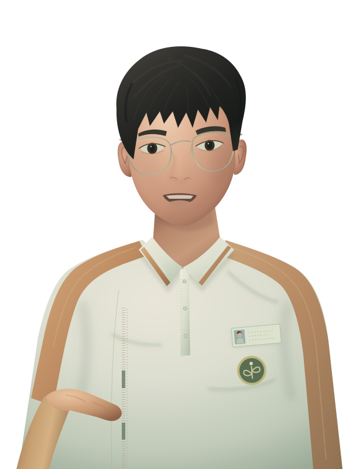
小霸 · 张嘴
小霸 · 闭嘴
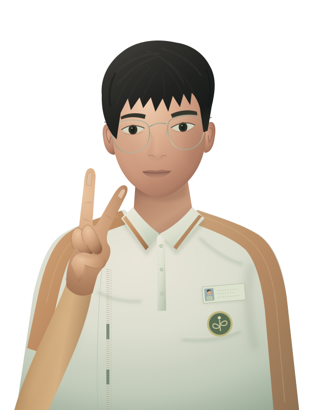
小霸 · 举手
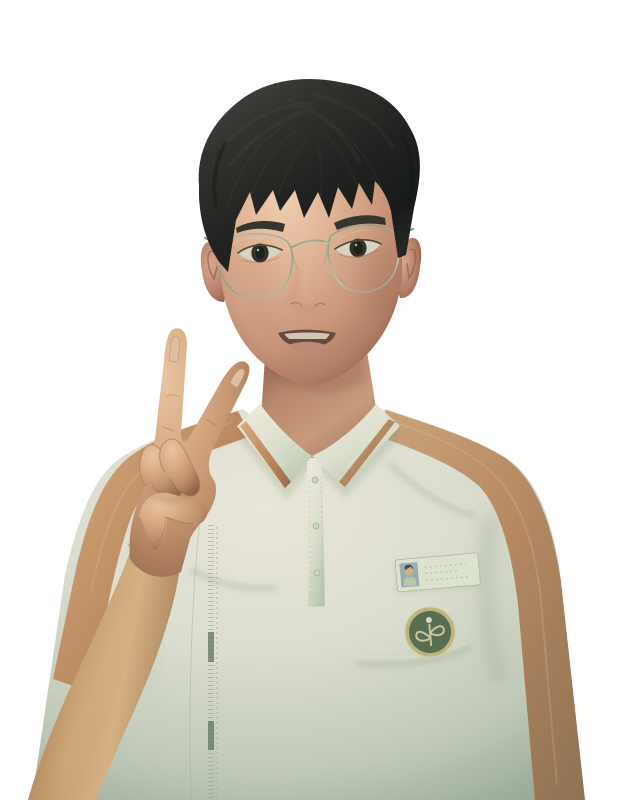
小霸 · 举手发言
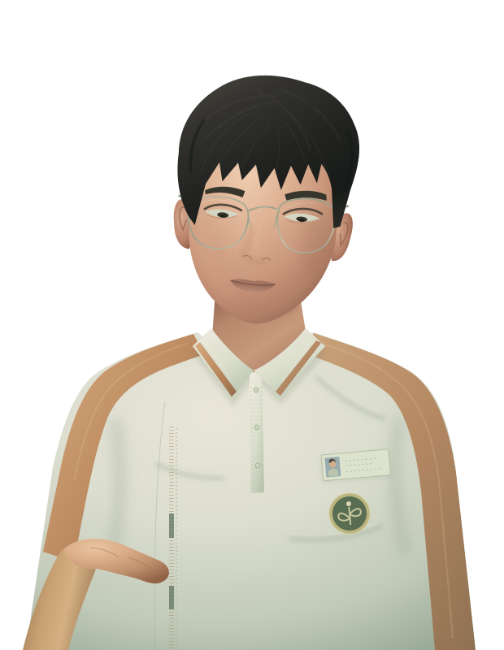
小霸 · 低头走神
小皮（naughty）· 五种状态
小皮 · 张嘴
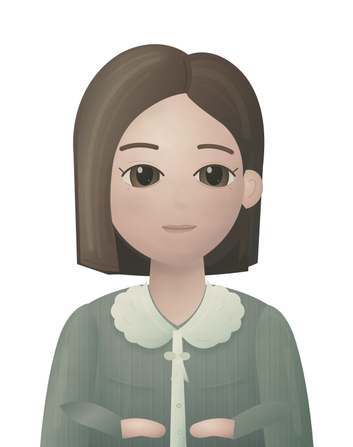
小皮 · 闭嘴
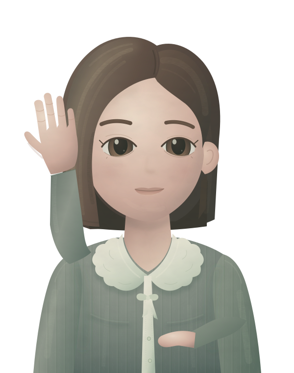
小皮 · 举手
小皮 · 举手发言
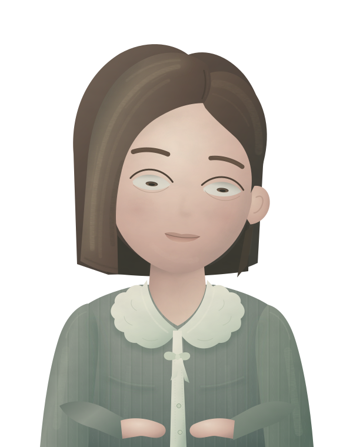
小皮 · 低头走神
小走（drift）· 五种状态
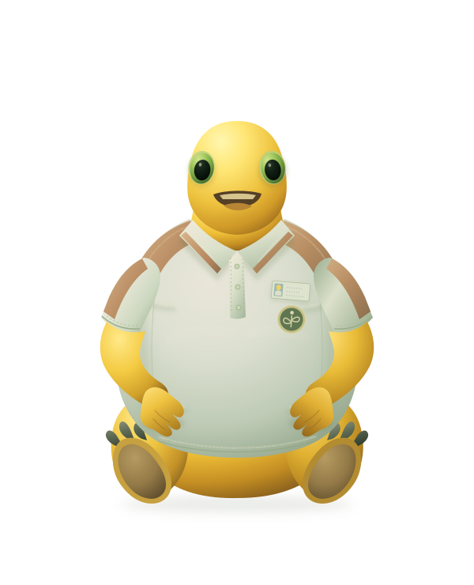
小走 · 张嘴
小走 · 闭嘴
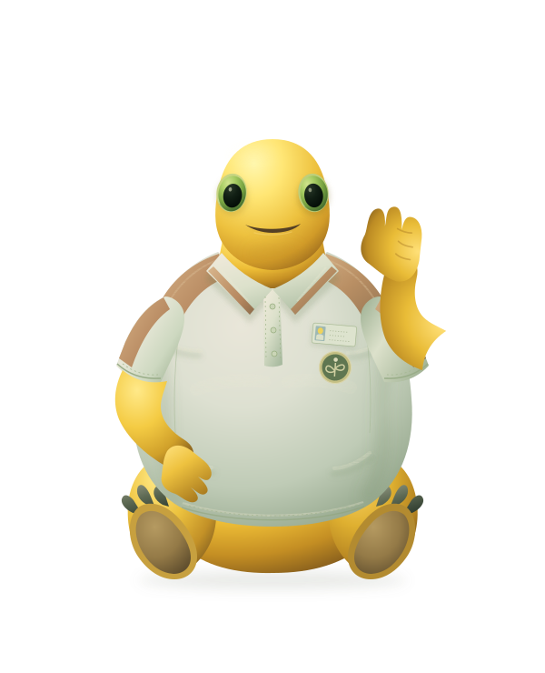
小走 · 举手
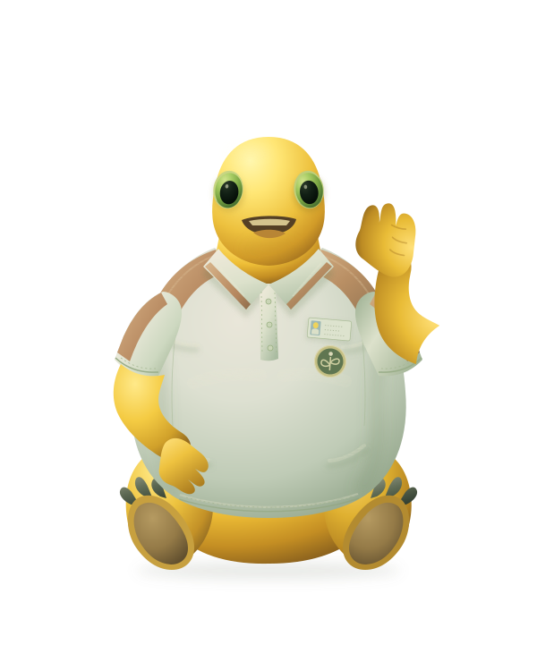
小走 · 举手发言
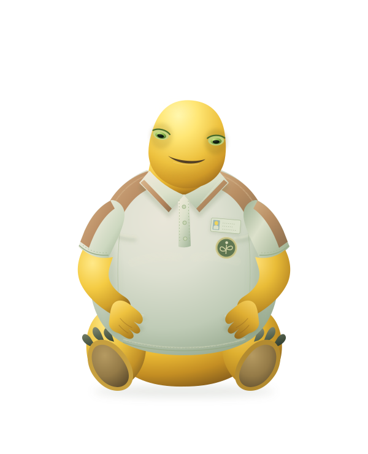
小走 · 低头走神
教室背景层（backdrop）· 视图框 2400×800